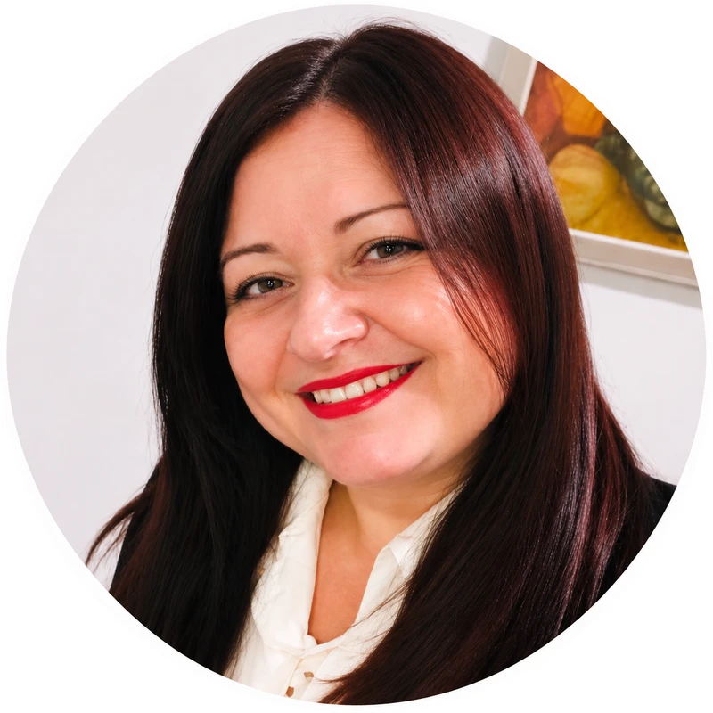

Adulti
Per adulti che attraversano momenti di difficoltà emotiva, desiderano approfondire la conoscenza di sé o sentono il bisogno di uno spazio di ascolto e riflessione.

Dott.ssa Gina Belmonte · Psicologa
Consulenze psicologiche per adulti e adolescenti, con orientamento psicoanalitico e psicodinamico, in presenza a Bologna e Bolzano e online.

Chi sono
Sono la Dott.ssa Gina Belmonte, psicologa, e il mio percorso professionale è guidato dall'interesse per la persona, per la sua storia e per le dinamiche emotive e relazionali che accompagnano la vita.
Ho conseguito la laurea triennale in Scienze della Formazione nelle Organizzazioni e la laurea magistrale in Formazione e Sviluppo delle Risorse Umane, presso l'Università degli Studi di Verona.
Nel corso della mia formazione ho approfondito lo studio del comportamento umano, dei processi decisionali e delle relazioni interpersonali.
Ho maturato esperienze formative nell'ambito del sostegno psicologico e della mediazione familiare presso ASDI di Bolzano, entrando in contatto con situazioni di difficoltà relazionale e cambiamento.
Il mio percorso comprende inoltre un'esperienza di tirocinio osservativo presso SIIPaC Onlus, nell'ambito delle problematiche legate al gioco d'azzardo.
La mia formazione si è orientata verso la prospettiva psicoanalitica e psicodinamica, che attribuisce particolare attenzione alla storia personale, ai vissuti emotivi e ai processi interiori.
Credo nell'importanza di offrire uno spazio di ascolto nel quale la persona possa sentirsi accolta e accompagnata nella comprensione della propria esperienza.
Ogni storia è unica e merita di essere ascoltata con attenzione, sensibilità e rispetto.
A chi mi rivolgo
La consulenza psicologica offre uno spazio dedicato alla comprensione delle difficoltà, dei vissuti emotivi e delle esperienze personali.
Per adulti che attraversano momenti di difficoltà emotiva, desiderano approfondire la conoscenza di sé o sentono il bisogno di uno spazio di ascolto e riflessione.
Per adolescenti che vivono trasformazioni, difficoltà emotive o relazionali e possono beneficiare di uno spazio psicologico dedicato alla propria esperienza.
Per persone che attraversano passaggi delicati della vita, separazioni o situazioni relazionali complesse e desiderano comprendere meglio i propri vissuti.
Il mio approccio
Il mio orientamento si ispira alla prospettiva psicoanalitica e psicodinamica, che considera il mondo emotivo, la storia personale e i processi inconsci come aspetti importanti per comprendere l'esperienza individuale.
Attraverso l'ascolto e la riflessione, la consulenza psicologica può offrire uno spazio nel quale esplorare vissuti, difficoltà e dinamiche relazionali, favorendo una maggiore consapevolezza di sé.
Accogliere la persona e la sua esperienza con attenzione e rispetto, offrendo un tempo dedicato e uno spazio riservato.
Dare spazio alle esperienze che contribuiscono a costruire il proprio modo di vivere emozioni e relazioni.
Esplorare vissuti, sentimenti e modi di entrare in relazione, anche quelli che tendono a ripetersi nel tempo.
Favorire una comprensione più profonda di sé, nel rispetto dei tempi e dell'unicità di ogni persona.
I servizi
Consulenze psicologiche rivolte ad adulti e adolescenti, disponibili in presenza a Bologna e Bolzano e online.
 Bologna · Bolzano
Bologna · Bolzano
Un luogo riservato in cui fermarsi e ascoltarsi.
L'incontro in studio offre un contesto protetto e accogliente, pensato per dare tempo e parola alla propria esperienza. La presenza fisica favorisce un ascolto diretto e la costruzione graduale della relazione professionale.
Ricevo adulti e adolescenti nelle città di Bologna e Bolzano, in un clima di riservatezza e rispetto.
 Online
Online
L'ascolto che supera la distanza.
La consulenza online permette di incontrarsi attraverso strumenti digitali appropriati, mantenendo la stessa attenzione alla relazione professionale e alla riservatezza.
È una possibilità preziosa quando la distanza, gli impegni o le esigenze personali rendono difficile l'incontro in studio. L'appropriatezza di questa modalità viene valutata insieme, in base alla situazione individuale.
Come funziona
Puoi scrivermi o telefonarmi per richiedere informazioni sulle consulenze psicologiche.
Un primo contatto permette di chiarire le esigenze e di conoscerci, senza fretta.
Valutiamo insieme la modalità più appropriata: in presenza a Bologna o Bolzano, oppure online.
In base alla situazione e alle necessità della persona, valutiamo insieme come procedere.
Dove ricevo
Offro consulenze psicologiche in presenza nelle città di Bologna e Bolzano e in modalità online.
Consulenze psicologiche in presenza.
Indirizzo in arrivoConsulenze psicologiche in presenza.
Indirizzo in arrivoConsulenze psicologiche a distanza.
Ovunque tu siaFAQ
Mi rivolgo ad adulti e adolescenti che desiderano uno spazio di ascolto, riflessione e comprensione delle proprie difficoltà o esperienze personali.
È la prospettiva a cui mi ispiro nel mio lavoro: attribuisco importanza alla storia personale, ai vissuti emotivi, alle relazioni e ai processi inconsci che possono contribuire al modo in cui viviamo le nostre esperienze.
Sì, offro consulenze psicologiche anche online. Valuto insieme a te l'appropriatezza della modalità a distanza, in relazione alla tua situazione e alle tue esigenze.
Ricevo in presenza a Bologna e a Bolzano. Puoi chiedermi direttamente gli indirizzi e le modalità organizzative: sarò felice di darti tutte le informazioni.
Puoi telefonarmi al 339 7969054 oppure scrivermi all'indirizzo gina_belmonte@virgilio.it: ti risponderò per darti tutte le informazioni.
Contatti
Se desideri ricevere informazioni sulle consulenze psicologiche o conoscere le modalità disponibili, scrivimi compilando il modulo.